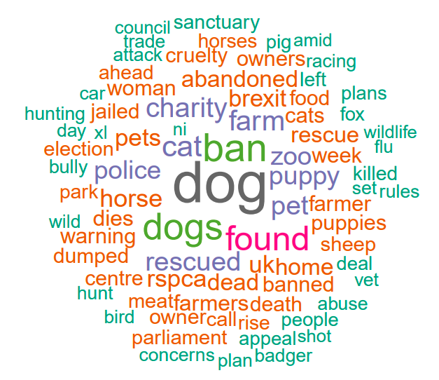
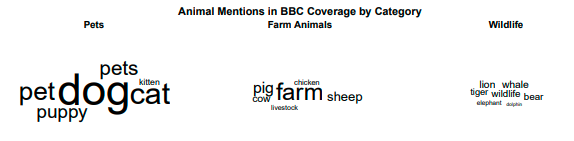

Background
This project analyzes how animal welfare topics are framed in media by scraping and analyzing BBC News articles. Using computational text analysis, we examine frequency, tone, and framing of animal welfare coverage to understand media representation patterns.
The analysis covers 3,441 articles published between 2010-2025, revealing how language shapes public perception of animal welfare issues.
Goals
- Scrape and analyze BBC News articles about animal welfare
- Identify most frequent terms and sentiment patterns
- Understand framing devices and subject focus in coverage
- Quantify negative vs. positive narratives
Results
Sentiment Analysis
76.04% of headlines had negative sentiment
23.96% had positive sentiment
Top Words
Dog, ban, dogs, found, cat, farm, charity, rescued, pet, puppy
Framing Patterns
1.8:1 ratio of negative-to-positive framing terms
Problem-centric language dominates coverage
Subject Focus
Pets receive 3x more coverage than farm animals
Wildlife appears primarily as conservation icons
Detailed Analysis
Word Frequency Analysis
The most frequent terms in headlines reveal key topics in BBC's coverage:
Domestic animals dominate the discourse, with 'dog' appearing 168 times and 'cat' 95 times.
Sentiment Analysis
Using the Bing lexicon, we classified headlines as positive or negative:
| Word | Sentiment | Count |
|---|---|---|
| dead | negative | 62 |
| dies | negative | 53 |
| warning | negative | 49 |
| appeal | positive | 33 |
| protect | positive | 12 |
Framing Analysis
Quantitative analysis reveals how BBC News employs specific language:
- Problem-Centric Language: 'abandoned' (61 mentions), 'cruelty' (47)
- Rescue Narratives: 'rescue' (60), 'sanctuary' (37)
- Policy Discourse: 'law' (24), 'rules' (27)
The 1.8:1 ratio of negative-to-positive framing terms confirms a predominantly crisis-oriented narrative.
Animal Type Coverage
Distinct patterns in how different animal categories are discussed:
Pets dominate coverage (818 mentions) compared to wildlife (115) or livestock (213).
Methodology
The project followed these steps:
- Web Scraping: Used Rselenium and rvest to extract article titles, snippets, and dates from BBC News search results
- Data Cleaning: Removed HTML artifacts, duplicates, and empty fields
- Text Mining: Tokenized words, removed stopwords, analyzed term frequencies
- Sentiment Analysis: Applied tidytext sentiment lexicons (bing)
- Visualization: Created charts and plots to illustrate findings
Conclusions
This analysis reveals BBC's animal welfare coverage is characterized by:
- A strong focus on domestic animals and regulatory actions
- Predominantly negative framing (76% of headlines)
- Disproportionate attention to pets over ecologically significant species
- Frequent linkage of animals to legislative debates
The project demonstrates how computational methods can reveal hidden patterns in media ecosystems.